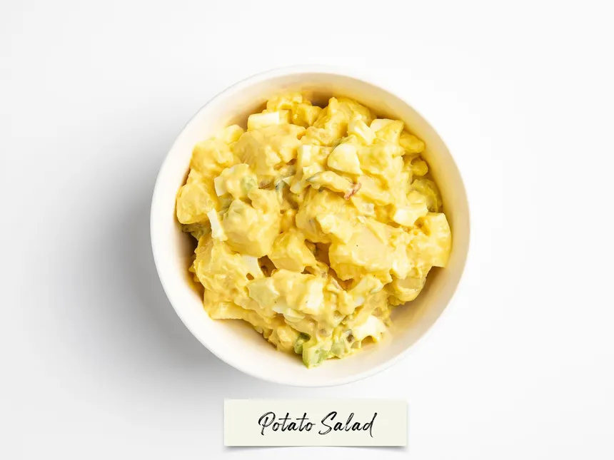

Home
Potato Salad

- Prep Time: 20 min
- Cook Time: 30 min
- Total Time: 50 min
Description
This potato salad is a classic side dish perfect for picnics and barbecues. It's creamy, tangy, and packed with flavor.
Ingredients
- 2 pounds potatoes, peeled and diced
- 1 cup mayonnaise
- 2 tablespoons mustard
- 1/4 cup chopped green onions
- 1/4 cup chopped celery
- Salt and pepper to taste
Instructions
- Boil the potatoes in salted water until tender, about 15-20 minutes. Drain and let cool.
- In a large bowl, mix together the mayonnaise, mustard, green onions, celery, salt, and pepper.
- Add the cooled potatoes to the dressing and mix until well combined.
- Chill in the refrigerator for at least 30 minutes before serving.